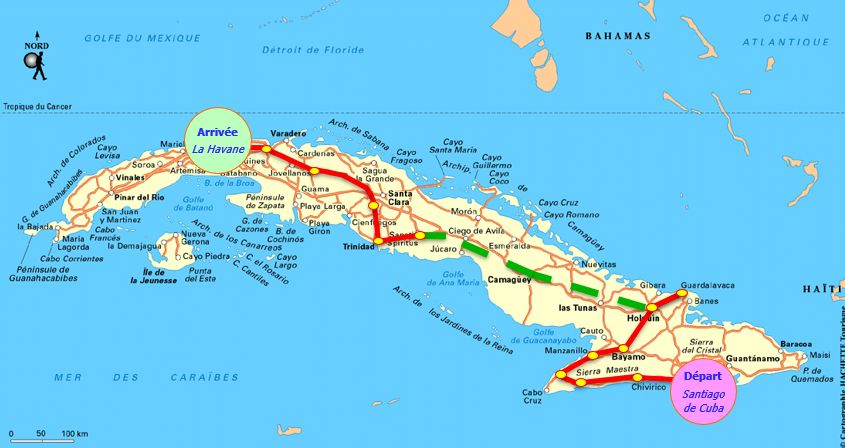
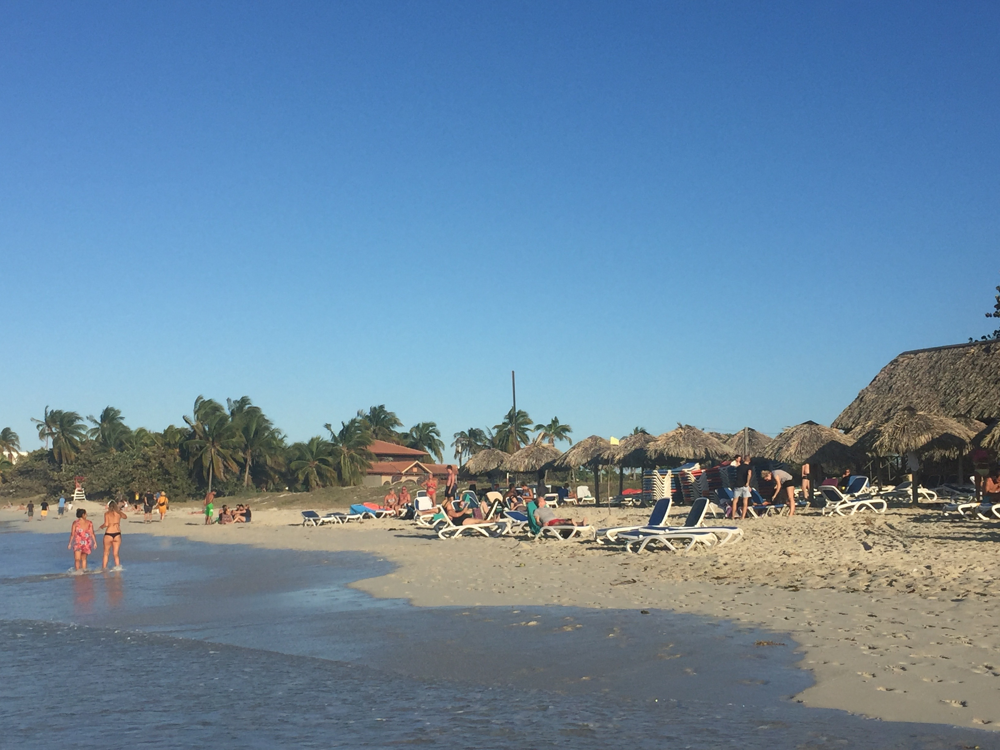
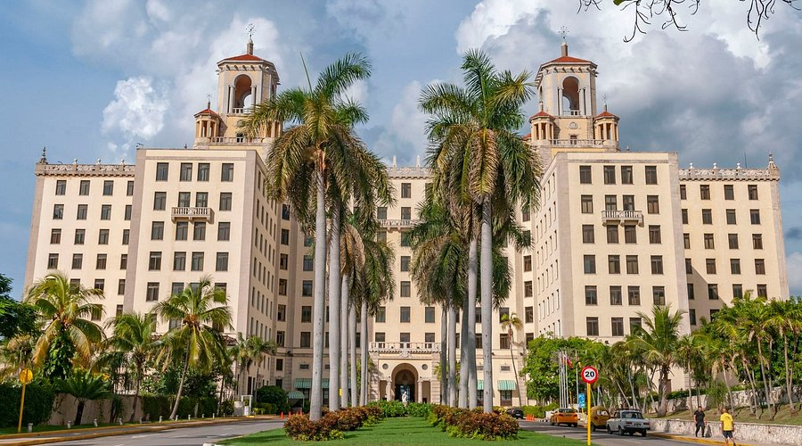
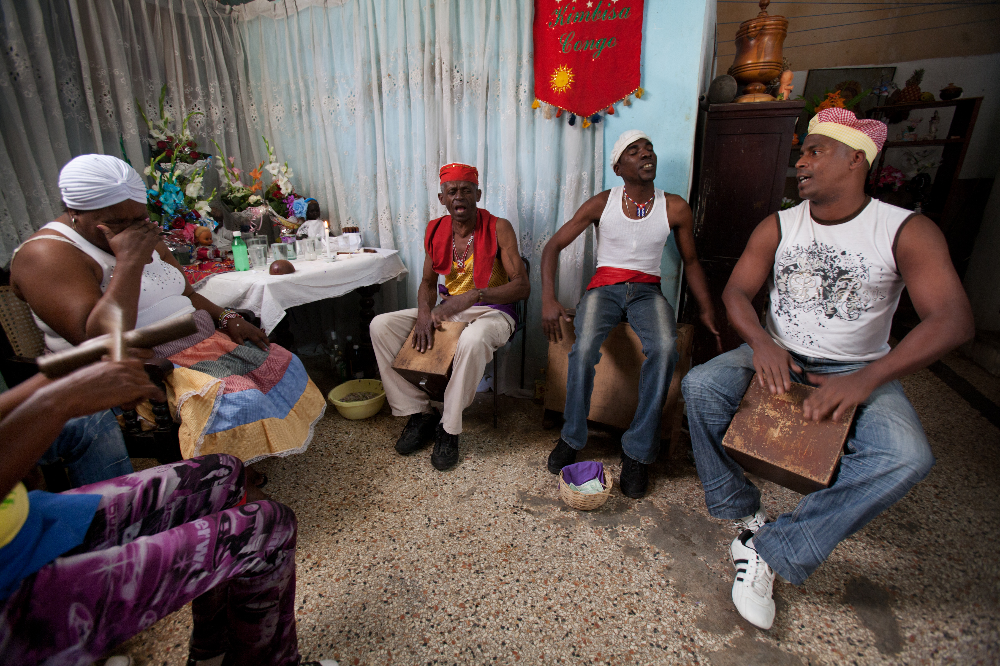

¡Vamos a pedalear por Cuba!
22 jours, plus de 1 000 km de paysages pour cyclistes confirmés. Des montagnes de la Sierra Maestra aux rues de La Havane, avec un détour possible par les mogotes de Viñales. Montées exigeantes, routes ondulantes, chaleur tropicale – chaque coup de pédale révèle la beauté brute de l'île « crocodile ». Programme validé à l'unanimité par notre groupe de passionnés.
Le voyage en un coup d'œil

🗺️ Le Concept : Est → Ouest
- 1 007 km en 12 étapes vélo
- 23 nuits chez l'habitant
- Voiture suiveuse (bagages, mécanique)
- Parcours Santiago → La Havane

🏔️ Sierra Maestra & Granma
- Étapes 1 à 6 : Santiago → Holguín
- Paysages montagneux du Granma
- Immersion totale en campagne
- Étapes de 39 à 111 km

🌊 Guardalavaca & Centre
- Étape 7 : Holguín → Guardalavaca A/R
- 110 km de côte et de nature
- Transfert vers Sancti Spíritus
- Cœur historique de Cuba

🏛️ Trinidad & Patrimoine
- Étapes 8 à 10 : Sancti Spíritus → Cascajal
- Ville coloniale classée UNESCO
- Topes de Collantes (montagnes)
- Architecture et histoire

🏙️ La Havane & Viñales
- Étapes 11-12 : Matanzas → La Havane
- Arrivée triomphale dans la capitale
- Option Viñales (mogotes)
- 2 à 3 jours d'exploration urbaine

🥁 Culture & Santería
- Immersion chez l'habitant
- Soirée cubaine & journée paysanne
- Cochon de lait (despedida)
- Rencontres authentiques
L'âme de Cuba
Entre classic cars, chevaux et campagnes verdoyantes. Chaque kilomètre est une leçon d'histoire et de résilience.
Votre itinéraire jour par jour
Phase 1 : L'Est (Santiago → Holguín)
Arrivée à Santiago de Cuba
Accueil, installation et visite de la ville. Santiago, berceau de la révolution et capitale culturelle de l'Est, vibre au rythme du son et de la salsa.
Les 6 premières étapes (78 à 111 km)
Santiago → Chivirico → Pilón → Niquero → Manzanillo → Bayamo → Holguín. Traversée de la Sierra Maestra et de la province de Granma. Montées exigeantes, routes ondulantes, paysages à couper le souffle. Nuits chez l'habitant.
Phase 2 : Le Centre (Holguín → Trinidad)
Transfert Holguín → Sancti Spíritus
Journée de transfert en véhicule pour rejoindre le centre de l'île. Repos et préparation pour la suite de l'aventure.
Étapes 8 à 12 (61 à 123 km)
Sancti Spíritus → Trinidad → Manicaragua → Cascajal. Découverte de Trinidad (UNESCO), montée vers les Topes de Collantes. Paysages de montagnes, vallées et plantations.
Phase 3 : L'Ouest (Cascajal → La Havane)
Cascajal → Matanzas → La Havane
Les dernières grandes étapes (123 + 104 km). Traversée des plaines sucrières et arrivée triomphale dans la capitale. Installation à La Havane.
La Havane & Option Viñales
Exploration de La Havane : Malecón, Vieille Havane, classic cars. Option Viñales pour découvrir les mogotes et les plantations de tabac.
Fin de séjour & Vol retour
Derniers achats, despedida avec le groupe (journée paysanne, cochon de lait). Transfert aéroport et vol retour avec la salsa dans les jambes.
Entre classic cars et vélos
La voiture suiveuse assure bagages, mécanique et ravitaillement. Vous ne gardez que l'essentiel pour pédaler l'esprit libre.
Formule Sérénité & Infos pratiques
✅ Formule Sérénité incluse
- ✈️ Vol A/R & Carte de tourisme
- 🚐 Transferts aéroport
- 🏡 23 nuits chez l'habitant (chambre double)
- 🍳 Petits-déjeuners + 21 déjeuners
- 🚴 12 étapes vélo + 1 transfert
- 🚗 Voiture suiveuse (bagages, mécanique)
- 🎶 Soirée cubaine + despedida (cochon de lait)
- 🏛️ Visites des villes étapes
- 🧭 Guide accompagnateur expérimenté
🛂 Avant le départ
- Passeport & visa : Valable 6 mois après retour, carte de tourisme obligatoire
- Assurance santé : Obligatoire (attestation via carte Visa)
- Vélo : Carton de transport, entretien et pièces de rechange recommandés
- Niveau : Cyclistes confirmés (étapes jusqu'à 125 km, dénivelés Sierra & Topes de Collantes)
💵 Sur place
- Monnaie : Pesos cubains (CUP) – change en banque/Cadeca
- Prises : Américaine (double plat) 110/220 V – adaptateur recommandé
- Sécurité : Cuba = pays le plus sécuritaire d'Amérique latine
- Ambassade : Calle 14 n°312, Miramar (Playa), La Havane
🍽️ Repas & Ambiance
- Tous les déjeuners pris ensemble
- Soirées libres sauf 3 (soirée cubaine, despedida, journée paysanne)
- Petit groupe · programme validé à l'unanimité
- Immersion totale chez l'habitant (matrimonial/twin)
Votre itinéraire sur la carte
De Santiago de Cuba à La Havane, en passant par la Sierra Maestra, Trinidad et Matanzas : cliquez sur chaque point doré pour découvrir les étapes de votre aventure.
¡Vamos a pedalear por Cuba!
Bon coup de pédale sur les routes des Caraïbes · Santiago · Trinidad · La Havane · 1 007 km
Parlons de votre projet →